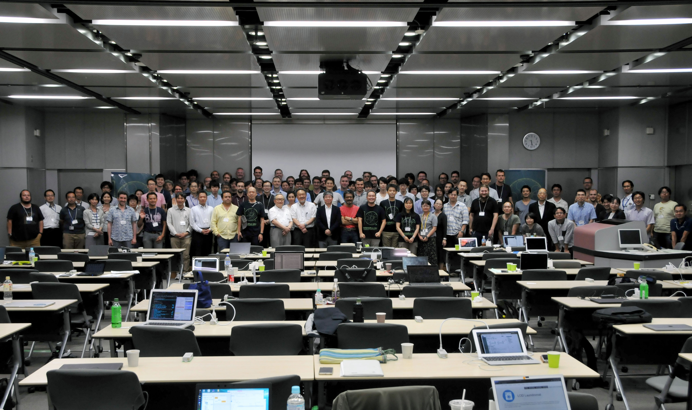

Togo Symposium
Taking place annually on October 5th, the “Togo day (10-5 can be read “To-Go” in Japanese)” since 2010, Togo symposium offers sessions to share domestic research progress on database integration, and lectures and poster presentations on information integration technologies. Lecture movies, presentation slides, and posters can be viewed online after the end of the symposium.
See details on the website (in Japanese).
BioHackathon Japan
Annual hackathon event for domestic developers held since 2010, mainly focusing on technology development and information sharing on database integration. Members from DBCLS, National Bioscience Database Center (NBDC), and institutes participating in NBDC’s promotion program for data integration get together for discussion and development. Wide variety of people interested in integration and utilization of data in biomedical sciences also participate.
BioHackathon
Annual international conference held by DBCLS since 2008 for information technology engineers/researchers in the field of life science. Discussions on information sharing, standardization and interoperability of biological data integration take place with Hackathon style. Every year, many engineers/researchers get together from all over the world to discuss and develop intensively for all week long.
access
SPARQLthon
Mini-Hackathon held monthly for domestic developers/researchers interested in semantic web technologies in the life science field. It is a place not only to develop projects that are initiated in annual BioHackathon and BioHackathon Japan, but also to share information on state-of-the-art technologies. It is a community that various participants with various background (e.g., academics, companies, engineers, researchers, designers) can join.
See details on the website (in Japanese).
access